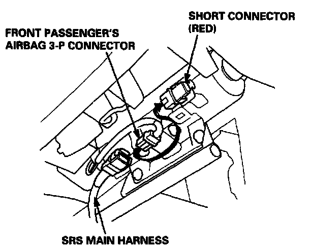
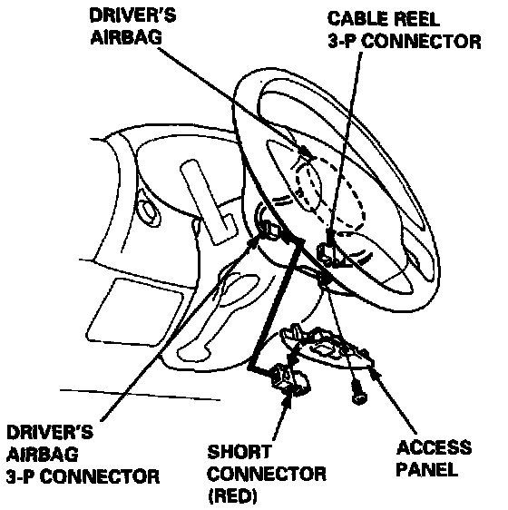
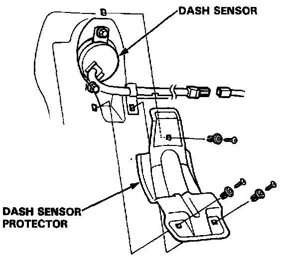
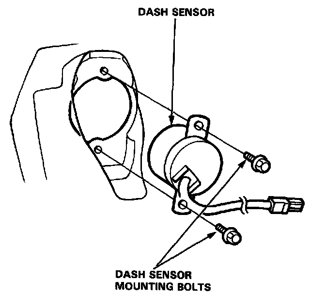
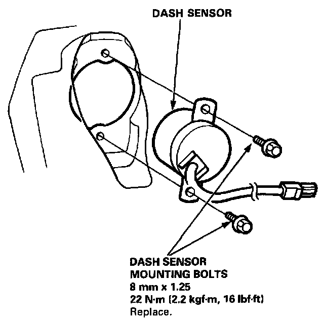

Impact Sensor: Service and Repair
DASH SENSOR REPLACEMENTCAUTION:
- Do not damage the sensor wiring.
- Do not install used SRS parts from another car, When repairing an SRS: use only new parts.
- Replace a sensor if it is dented, cracked, or deformed.
NOTE: The original radio has a coded theft protection circuit. Be sure to get the customer's code number before disconnecting the battery cables.
1. Disconnect the battery negative cable and then the positive cable.
2. Remove the glove box damper (see section 20), then remove the glove box.


3. Connect the short connector(s) to the airbag(s).

4. Remove the footrest driver's side only and door sill molding, then pull the carpet back, and remove the dash sensor protector. (Left side shown; right side is similar.)

5. Remove the two mounting bolts, then remove the dash sensor.
CAUTION:
- Be sure to install the harness wires so that they are not pinched or interfering with other car parts.
- Carefully inspect the dash sensors for signs of being dropped or improperly handled, such as dents, cracks or deformation.
- For the SRS to function properly, the right and left sensors must be installed on the proper sides.

6. Install the sensor securely.
7. Reinstall all other removed parts.
8. Remove and properly store the short connector then reconnect the airbag connector(s) (and reinstall the glove box).
9. Reconnect the battery positive cable, then the negative cable.
10. After installing the dash sensor, confirm proper system operation; Turn the ignition ON (II): the instrument panel SRS indicator light should come on for about six seconds and then go off.
11. Enter the code number to restore radio operation.